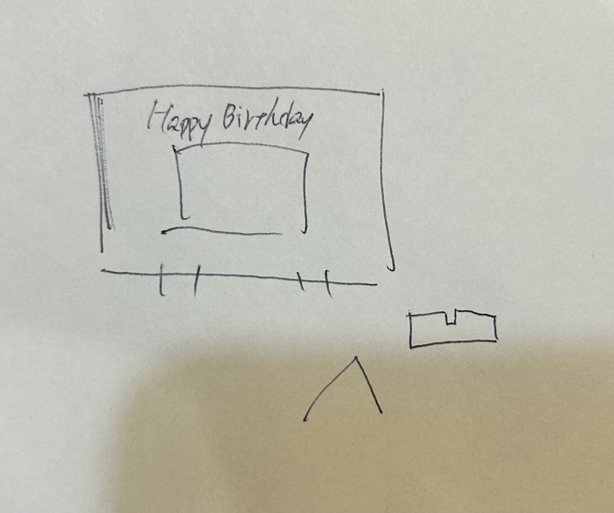
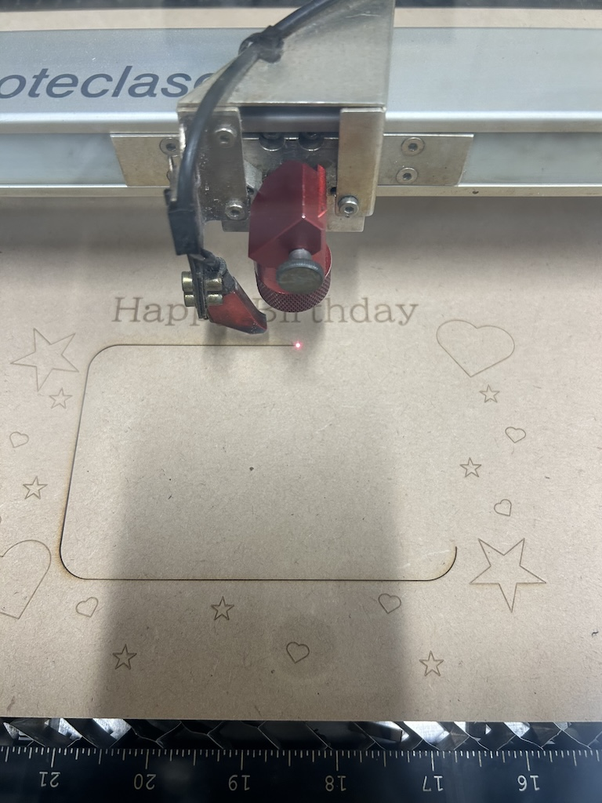
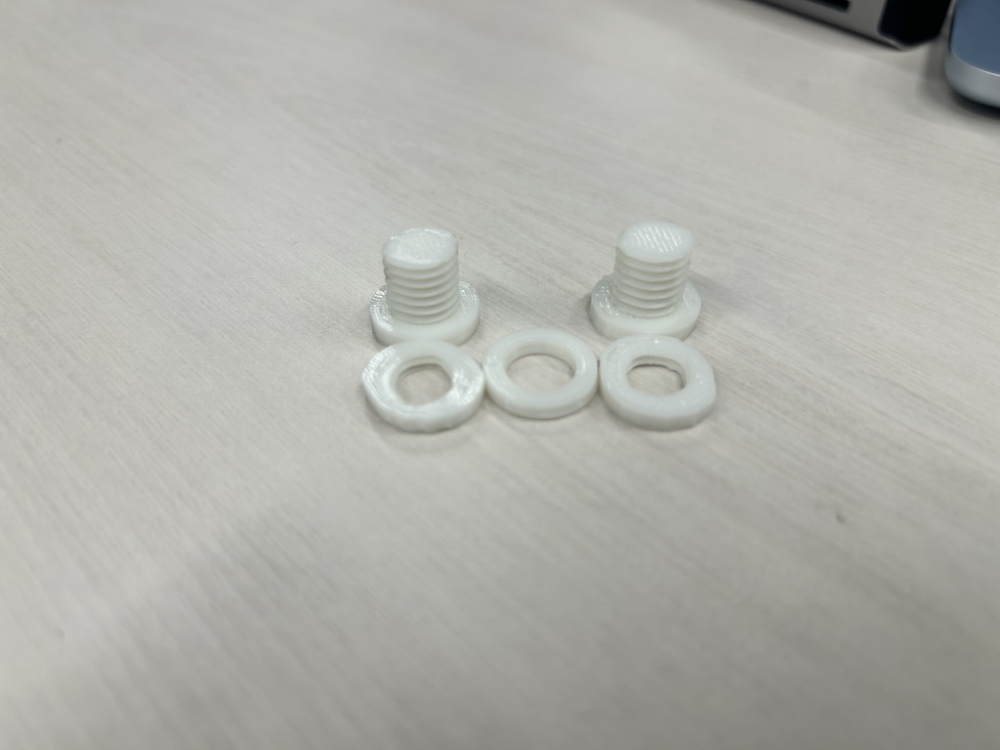
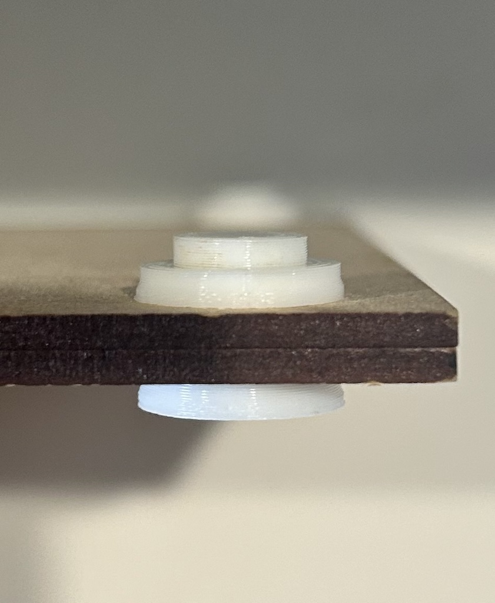
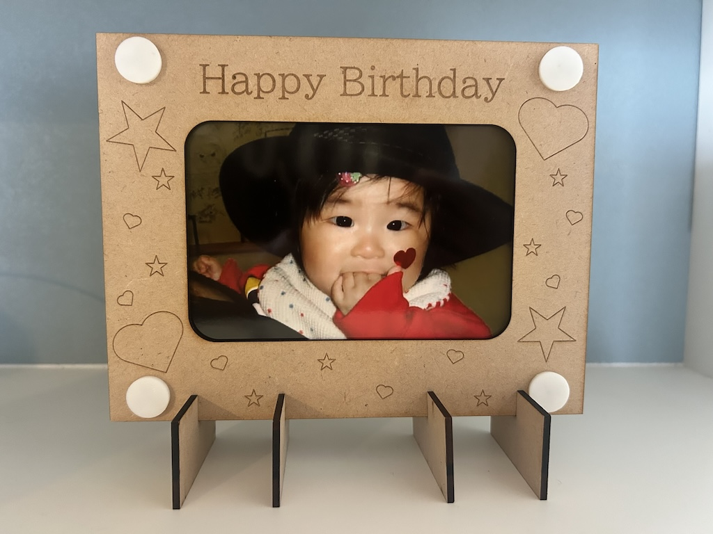

このようにスケッチを描きFusionで設計しました。
まずは切り取るところを描きました。私は額縁の残りの枠を使って立たせるような素材を作りたかったので、その余裕を考えながら設計しました。
ですが、板２枚の厚みが薄すぎて凹みを設計図に書き込む事が難しく、かなり時間をそこに取られました。

このように出来たので、次にファブラボのパソコンのイラストレーターを使って、切り取る線を描き、削る線も描きました。
私はてっきりFusionで文字入れる事ができたのでそれが反映されると思っていたのですが、実際には反映されてなく、驚きました。なのでいらうとレーターで文字を入れ、柄も入れました。
（写真は撮ることを忘れてしまいました💦）
そして、切り取る線と削る線を描いて、レーザー加工機で切り取りました。

うまく切り取る事ができたので、次にいたをずれないように固定させるための部品を３Dプリンターで作りました。
まずは、Fusionで設計しました。ファブラボのスタッフさんの意見も取り入れて、ネジのように窪みをつけるものと普通の釘のようなものの２パターンを３Dプリンターで作りました。
結果的に、ネジの方はサイズが小さすぎて綺麗な円にならず、うまくいかなかったので、釘の方で作ることにしました。
ですが、釘の方もサイズを何度も変更し作り上げていたので、最終的にはCuraがバグを起こしてしまい、うまく円にならないものがありました。
そのため、釘の方も何度も作り直し、最終的に釘にはめる方の部品はハマらなかったらヤスリで削り、ハマるように作りました。
そして、無事全ての穴に釘をはめる事ができました。


そして、全ての部品が完成したので、組み立てました。
手元に写真がなかったため、まずは写真を入れずに組み立てました。
そしたらまさかの立たせる時の窪みの幅が想像より広くなってしまい、絶妙にガタガタして、うまく立たせる事ができませんでした。
ですが、写真を入れて立たせてみると写真の厚さでちょうど良くなり、うまく立たせることに成功しました。
また、写真が板の間からずり落ちて来ないか心配だったが、固定させる釘を作ったことで間からずり落ちる事なく、うまく立たせる事ができました。

＜なぜこれを作ろうと思ったのか＞
私が小さな頃やそれ以前は写真を撮って現像して飾るという事が多く行われていました。ですが最近はスマホで写真を撮ったらそれを終わりで現像して飾るということが少なくなってきていると思います。
ですが、やはり写真を現像して目に入るところに飾ることで思い出を振り返る事ができます。思い出をスマホの中の写真だけ留まらせるのではなく、思い出して欲しいと思いこの写真立てを作りました。
また、これは誕生日の近い友人に向けて作ったのですが、最近は誕生日のプレゼントもスマホの中で完結させてしまうことも多くなってきていると思います。
ですがやはり、誕生日のプレゼントは形として残るものを渡すことで、思い出として残ると思います。なので、思い出を振り返ることができるようにという２つの意味を込めて制作しました。
＜制作してみて＞
パソコンで設計するため、実際のサイズ感が分からず、設計するのに苦労しました。そのため、溝がうまくハマらなかったりしたため難しかったです。また、前回の３Dプリンターでは１回で納得のいくものを制作できたので、今回初めて３Dプリンターで躓きました。
何度も制作しても納得のいくものが作れなかったのですが、ファブラボのスタッフさんの手も借りながら最終的には作る事ができたのでよかったです。
デザイン演習Ⅰ・Ⅱトップページ
XBPトップページ
釘stlファイル